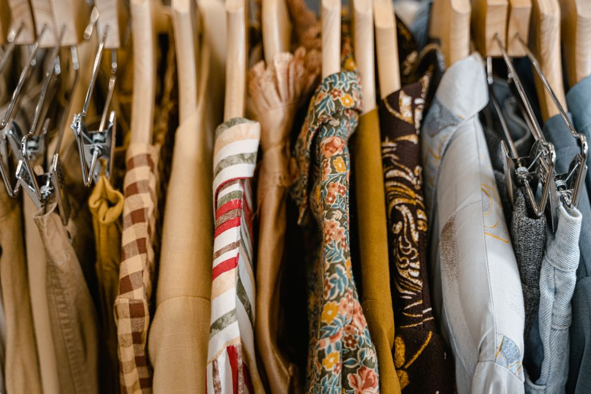

Trois pistes « blocs couleur » pour la section problème — à comparer, puis je code la retenue
Chaque photo est posée sur un bloc de couleur légèrement décalé (bleu pâle, or doux, bleu clair). Éditorial, calme, et la touche d'or relie la palette paiement.

Une bande bleu plein traverse toute la page ; les photos sont à cheval dessus, les légendes passent en blanc dans la bande. Fort, structuré, très « marque ».
Une grille deux par deux : trois photos, et le quatrième carreau est un bloc bleu plein qui porte la phrase-choc. Les mots-clés passent sur les images.
recopier
vérifier
relancer
Des heures chaque soir, et des ventes perdues à chaque live.